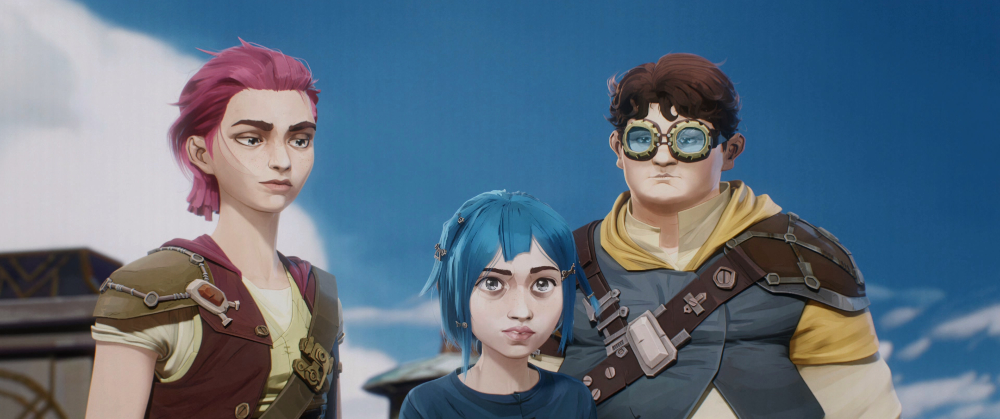
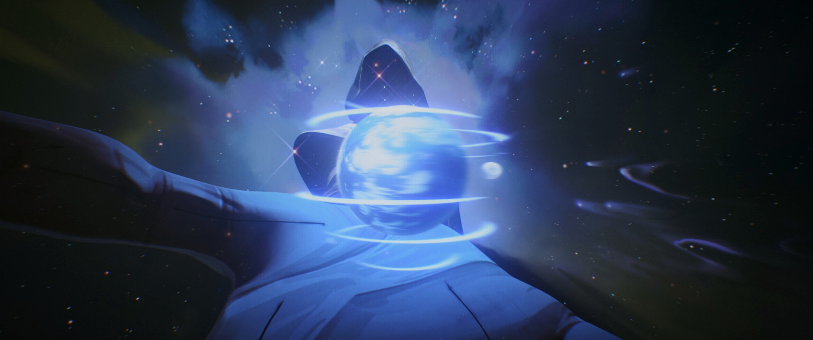

| Imagen | N.º (temp.) | Capítulo | Dirigido por | Escrito por | Fecha de estreno |
|---|---|---|---|---|---|
|  | 1 | Welcome to the Playground Bienvenidos al Terreno de Juego (ES) |
Pascal Charrue y Arnaud Delord | Christian Linke y Alex Yee | 6 de noviembre de 2021 |
|  | 2 | Some Mysteries are Better Left Unsolved Algunos Misterios es Mejor no Resolverlos (ES) |
Nick Luddington | 6 de noviembre de 2021 | |
 |
3 | The Base Violence Necessary for Change La Violencia Mínima Necesaria Para el Cambio (ES) |
Ash Brannon | 6 de noviembre de 2021 | |
 |
4 | Happy Progress Day! ¡Feliz Día del Progreso! (ES) |
Pascal Charrue y Arnaud Delord | David Dunne | 13 de noviembre de 2021 |
 |
5 | Everybody Wants to be my Enemy Todos Quieren ser mis Enemigos (ES) |
Amanda Overton | 13 de noviembre de 2021 | |
 |
6 | When These Walls Come Tumbling Down Cuando Estas Paredes se Derrumben (ES) |
Alex Yee | 13 de noviembre de 2021 | |
 |
7 | The Boy Savior El Pequeño Salvador (ES) |
Pascal Charrue y Arnaud Delord | Nick Luddington | 20 de noviembre de 2021 |
 |
8 | Oil and Water Aceite y Agua (ES) |
Ben St. John y Mollie St. John | 20 de noviembre de 2021 | |
 |
9 | The Monster you Created El Monstruo que Creaste (ES) |
Christian Linke y Alex Yee | 20 de noviembre de 2021 |